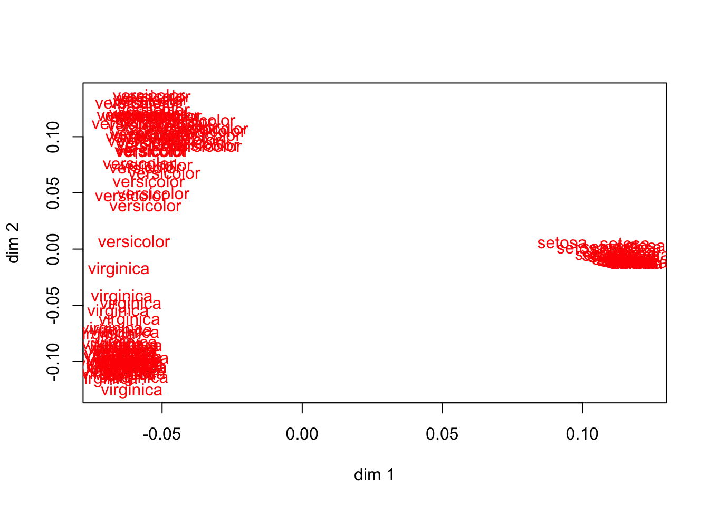
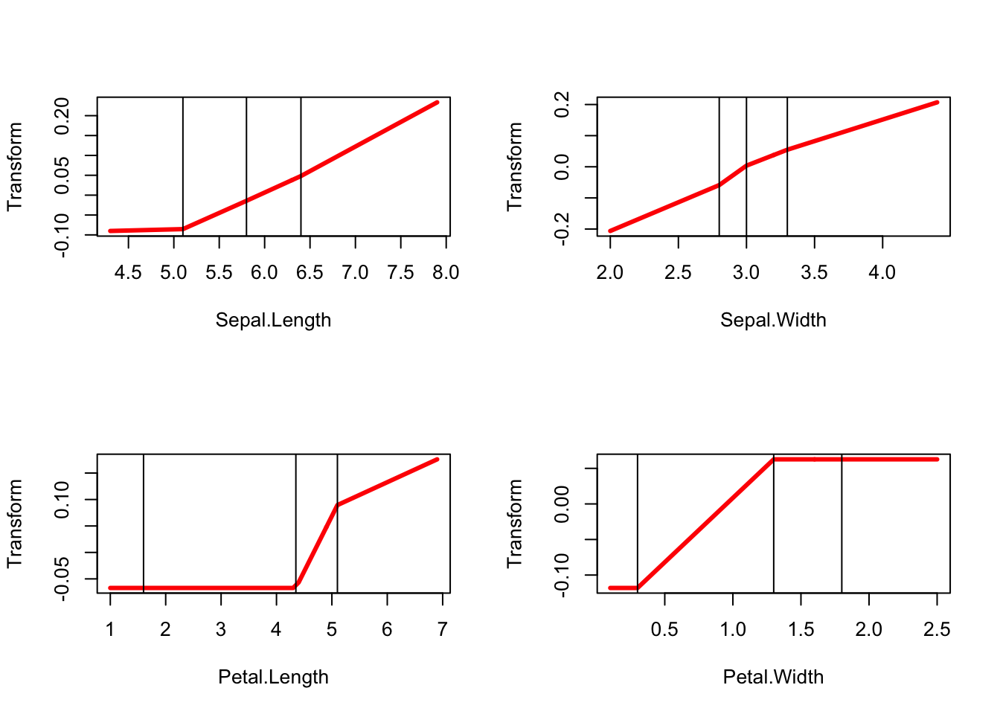

8 Discriminant Analysis and criminals()
##Equations
If the second block contains more than one copy of a single variable and we use binary indicator coding for that variable, then we optimize the eigenvalue (between/within ratio) sums for a canonical discriminant analysis.
##Examples
###Iris data
The next example illustrates (canonical) discriminant analysis, using the obligatory Anderson-Fisher iris data. Since there are three species of iris, we use two copies for the species variable. The other four variables are in the same block, they are transformed using piecewise linear monotone splines with five knots.
data(iris, package="datasets")
iris_vars <- names(iris)
iris_knots <- knotsQ(iris[,1:4])
x <- as.matrix(iris[,1:4])
y <- as.matrix(iris[[5]])h <- criminals (x, y, xdegrees = 1)In 191 iterations we find minimum loss 0.0302260098. The object scores are in figure 23 plotted against the original variables (not the transformed variables), and the transformation plots are in figure 24.


Discriminant analysis decomposes the total dispersion matrix \(T\) into a sum of a between-groups dispersion \(B\) and a within-groups dispersion \(W\), and then finds directions in the space spanned by the variables for which the between-variance is largest relative to the total variance. MVAOS optimizes the sum of the \(r\) largest eigenvalues of \(T^{-1}B\). Before optimal transformation these
eigenvalues for the iris data are r, after transformation they are r.
#Multiblock Canonical Correlation and overals()
##Equations
##Examples
8.0.1 Thirteen Personality Scales
This is the same example as before, but now we group the five scales from the Eysenck Personality Inventory and the five from the Big Five inventory into blocks. The remaining three variables define three separate blocks. No copies are used, and we use monotone cubic splines with the interior knots at the quartiles.
epi_knots <- lapply (epi, function (x) fivenum (x)[2:4])
epi_degrees <- rep (3, 13)
epi_blocks <- c(1,1,1,1,1,2,2,2,2,2,3,4,5)h <- overals(epi, epi_blocks, epi_copies, epi_knots, epi_degrees, epi_ordinal)#Code
##R Code
###Driver
source ("gifiEngine.R")
source ("gifiUtilities.R")
source ("gifiWrappers.R")
source ("gifiStructures.R")
source ("aspectEngine.R")
source ("theAspects.R")
source ("matrix.R")
source ("coneRegression.R")
source ("splineBasis.R")
source ("coding.R")###Engine
gifiEngine <-
function (gifi,
ndim,
itmax,
eps,
seed,
verbose) {
set.seed (seed)
nobs <- nrow (as.matrix (gifi[[1]][[1]]$data))
nsets <- length (gifi)
nvars <- sum (sapply (gifi, length))
itel <- 1
if (nvars == 1)
stop("a gifiAnalysis needs more than one variable")
x <- matrix (rnorm (nobs * ndim), nobs, ndim)
x <- gsRC (center (x))$q
xGifi <- xGifi (gifi, x)
fold <- 0
asets <- 0
for (i in 1:nsets) {
gifiSet <- gifi[[i]]
xGifiSet <- xGifi[[i]]
nvarset <- length (gifiSet)
ha <- matrix (0, nobs, ndim)
activeCount <- 0
for (j in 1:nvarset) {
if (gifiSet[[j]]$active) {
activeCount <- activeCount + 1
ha <- ha + xGifiSet[[j]]$scores
}
}
if (activeCount > 0) {
asets <- asets + 1
fold <- fold + sum ((x - ha) ^ 2)
}
}
fold <- fold / (asets * ndim)
repeat {
xz <- matrix(0, nobs, ndim)
fnew <- fmid <- 0
for (i in 1:nsets) {
gifiSet <- gifi[[i]]
xGifiSet <- xGifi[[i]]
nvarset <- length (gifiSet)
hh <- matrix (0, nobs, 0)
activeCount <- 0
for (j in 1:nvarset) {
if (gifiSet[[j]]$active) {
activeCount <- activeCount + 1
hh <- cbind (hh, xGifiSet[[j]]$transform)
}
}
if (activeCount == 0)
next
lf <- lsRC (hh, x)
aa <- lf$solution
rs <- lf$residuals
kappa <- max (eigen (crossprod (aa))$values)
fmid <- fmid + sum (rs ^ 2)
target <- hh + tcrossprod (rs, aa) / kappa
hh <- matrix (0, nobs, 0)
scopies <- 0
for (j in 1:nvarset) {
gifiVar <- gifiSet[[j]]
jdata <- gifiVar$data
jbasis <- gifiVar$basis
jcopies <- gifiVar$copies
jdegree <- gifiVar$degree
jties <- gifiVar$ties
jmissing <- gifiVar$missing
jordinal <- gifiVar$ordinal
ja <- aa[scopies + 1:jcopies, , drop = FALSE]
jtarget <- target[, scopies + 1:jcopies, drop = FALSE]
hj <-
gifiTransform (
data = jdata,
target = jtarget,
basis = jbasis,
copies = jcopies,
degree = jdegree,
ordinal = jordinal,
ties = jties,
missing = jmissing
)
hj <- gsRC(normalize (center (hj)))$q
sc <- hj %*% ja
xGifi[[i]][[j]]$transform <- hj
xGifi[[i]][[j]]$weights <- ja
xGifi[[i]][[j]]$scores <- sc
xGifi[[i]][[j]]$quantifications <-
lsRC(jbasis, sc)$solution
activeCount <- 0
if (gifiSet[[j]]$active) {
activeCount <- activeCount + 1
hh <- cbind (hh, hj)
}
scopies <- scopies + jcopies
}
if (activeCount > 0) {
ha <- hh %*% aa
xz <- xz + ha
fnew <- fnew + sum ((x - ha) ^ 2)
}
}
fmid <- fmid / (asets * ndim)
fnew <- fnew / (asets * ndim)
if (verbose)
cat(
"Iteration: ",
formatC (itel, width = 3, format = "d"),
"fold: ",
formatC (
fold,
digits = 8,
width = 12,
format = "f"
),
"fmid: ",
formatC (
fmid,
digits = 8,
width = 12,
format = "f"
),
"fnew: ",
formatC (
fnew,
digits = 8,
width = 12,
format = "f"
),
"\n"
)
if (((itel == itmax) || ((fold - fnew) < eps)) && (itel > 1))
break
itel <- itel + 1
fold <- fnew
x <- gsRC (center (xz))$q
}
return (list (
f = fnew,
ntel = itel,
x = x,
xGifi = xGifi
))
}
gifiTransform <-
function (data,
target,
basis,
copies,
degree,
ordinal,
ties,
missing) {
nobs <- nrow (as.matrix (data))
h <- matrix (0, nobs, copies)
if (degree == -1) {
if (ordinal) {
h[, 1] <-
coneRegression (
data = data,
target = target[, 1],
type = "c",
ties = ties,
missing = missing
)
}
else {
h[, 1] <-
coneRegression (
data = data,
target = target[, 1],
basis = basis,
type = "s",
missing = missing
)
}
}
if (degree >= 0) {
if (ordinal) {
h[, 1] <-
coneRegression (
data = data,
target = target[, 1],
basis = basis,
type = "i",
ties = ties,
missing = missing
)
}
else {
h[, 1] <-
coneRegression (
data = data,
target = target[, 1],
basis = basis,
type = "s",
ties = ties,
missing = missing
)
}
}
if (copies > 1) {
for (l in 2:copies)
h[, l] <-
coneRegression (
data = data,
target = target[, l],
basis = basis,
type = "s",
ties = ties,
missing = missing
)
}
return (h)
}###Aspect Engine
aspectEngine <-
function (gifi,
afunc,
eps = 1e-6,
itmax = 100,
verbose = 1,
monotone = FALSE,
...) {
nsets <- length (gifi)
for (i in 1:nsets) {
gifiSet <- gifi[[i]]
nvars <- length (gifiSet)
for (j in 1:nvars) {
gifiVar <- gifiSet[[j]]
q <- gifiVar$qr$q
}
}
itel <- 1
tdata <- matrix (0, n, m)
for (j in 1:m) {
tdata[, j] <- bd$x[[j]]
}
tdata <- apply (tdata, 2, function (z)
z - mean (z))
tdata <- apply (tdata, 2, function (z)
z / sqrt (sum (z ^ 2)))
corr <- crossprod (tdata)
af <- afunc(corr, ...)
fold <- af$f
g <- af$g
repeat {
for (j in 1:m) {
target <- drop (tdata[, -j] %*% g[-j, j])
k <- bd$b[[j]]
v <- bd$v[[j]]
u <- drop (crossprod(k, target))
s0 <- sum(target * tdata[, j])
if (ordinal[j]) {
ns <- nnls(v, u)
rr <- residuals(ns)
tt <- drop(k %*% rr)
} else
tt <- drop (k %*% u)
tt <- tt - mean (tt)
sq <- sum(tt ^ 2)
if (sq > 1e-15) {
tt <- tt / sqrt (sq)
tdata[, j] <- tt
}
s1 <- sum(target * tdata[, j])
if (verbose > 1)
cat (
"**** Variable",
formatC(j, width = 3, format = "d"),
"Before",
formatC(
s0,
digits = 8,
width = 12,
format = "f"
),
"After",
formatC(
s1,
digits = 8,
width = 12,
format = "f"
),
"\n"
)
if (!monotone) {
corr <- cor (tdata)
af <- afunc (corr, ...)
fnew <- af$f
g <- af$g
}
}
if (monotone) {
corr <- cor (tdata)
af <- afunc (corr, ...)
fnew <- af$f
g <- af$g
}
if (verbose > 0)
cat(
"Iteration: ",
formatC (itel, width = 3, format = "d"),
"fold: ",
formatC (
fold,
digits = 8,
width = 12,
format = "f"
),
"fnew: ",
formatC (
fnew,
digits = 8,
width = 12,
format = "f"
),
"\n"
)
if ((itel == itmax) || ((fnew - fold) < eps))
break
itel <- itel + 1
fold <- fnew
}
return (list (
tdata = tdata,
f = fnew,
r = corr,
g = g
))
}###Some Aspects
maxeig <- function (r, p) {
e <- eigen (r)
f <- sum (e$values[1:p])
g <- tcrossprod(e$vectors[,1:p])
return (list (f = f, g = g))
}
maxcor <- function (r, p) {
f <- sum (r ^ p)
g <- p * (r ^ (p - 1))
return (list (f = f, g = g))
}
maxabs <- function (r, p) {
f <- sum (abs(r) ^ p)
g <- p * (abs(r) ^ (p - 1)) * sign(r)
return (list (f = f, g = g))
}
maxdet <- function (r) {
f <- -log(det (r))
g <- -solve(r)
return (list (f = f, g = g))
}
maxsmc <- function (r, p) {
beta <- solve (r[-p,-p], r[p,-p])
f <- sum (beta * r[p,-p])
h <- rep (1, nrow (r))
h[-p] <- -beta
g <- -outer (h, h)
return (list (f = f, g = g))
}
maxsum <- function (r, p) {
f <- sum (sqrt (r ^ 2 + p))
g <- r / sqrt (r ^ 2 + p)
return (list (f = f, g = g))
}
maximage <- function (r) {
n <- nrow(r)
f <- 0
g <- matrix (0, n, n)
for (p in 1:n) {
beta <- solve (r[-p,-p], r[p,-p])
f <- f + sum (beta * r[p,-p])
h <- rep (1, nrow (r))
h[-p] <- -beta
g <- g - outer (h, h)
}
return (list (f = f, g = g))
}
maxfac <- function (r, p) {
fa <- factanal (NULL, p, covmat = r, rotation = "none")
s <- tcrossprod (fa$loadings) + diag (fa$unique)
g <- - solve (s)
f <- -log(det (s)) + sum (g * r)
return (list (f = f, g = g))
}###Structures
makeGifiVariable <-
function (data,
knots,
degree,
ordinal,
ties,
copies,
missing,
name) {
there <- which (!is.na (data))
notthere <- which (is.na (data))
nmis <- length (notthere)
nobs <- length (data)
if (length (there) == 0)
stop ("a gifiVariable cannot be completely missing")
work <- data[there]
if (degree == -1) {
type <- "categorical"
basis <- makeIndicator (work)
if (ncol (basis) == 1) {
stop ("a gifiVariable must have more than one category")
}
if (ncol (basis) == 2) {
type <- "binary"
}
}
if (degree >= 0) {
if (length (knots) == 0)
type <- "polynomial"
else
type <- "splinical"
basis <- bsplineBasis (work, degree, knots)
}
if (nmis > 0)
basis <- makeMissing (data, basis, missing)
copies <- min (copies, ncol (basis) - 1)
qr <- gsRC (center (basis))
if (qr$rank == 0)
stop ("a gifiVariable cannot be completely zero")
return (structure (
list (
data = data,
basis = basis,
qr = qr,
copies = copies,
degree = degree,
ties = ties,
ordinal = ordinal,
name = name,
type = type
),
class = "gifiVariable"
))
}
makeGifiSet <-
function (data,
knots,
degrees,
ordinal,
ties,
copies,
missing,
names) {
nvars <- ncol (data)
varList <- as.list (1:nvars)
for (i in 1:nvars) {
varList[[i]] <-
makeGifiVariable (
data = data[, i],
knots = knots[[i]],
degree = degrees[i],
ordinal = ordinal[i],
ties[i],
copies = copies[i],
missing = missing[i],
name = names[i]
)
}
return (structure (varList, class = "gifiSet"))
}
makeGifi <-
function (data,
knots,
degrees,
ordinal,
ties,
copies,
missing,
names,
sets) {
nsets <- max (sets)
setList <- as.list (1:nsets)
for (i in 1:nsets) {
k <- which (sets == i)
setList [[i]] <-
makeGifiSet (
data = data[, k, drop = FALSE],
knots = knots[k],
degrees = degrees[k],
ordinal = ordinal[k],
ties = ties[k],
copies = copies[k],
missing = missing[k],
names = names[k]
)
}
return (structure (setList, class = "gifi"))
}
xGifiVariable <- function (gifiVariable, ndim) {
basis <- gifiVariable$basis
nbas <- ncol (basis)
nobs <- length (gifiVariable$data)
copies <- gifiVariable$copies
transform <- matrix (0, nobs, copies)
transform[, 1] <- drop(basis %*% (1:nbas))
if (copies > 1) {
for (i in 2:copies)
transform[, i] <- drop (basis %*% rnorm (nbas))
}
transform <- gsRC (normalize (center (transform)))$q
nbas <- ncol (transform)
weights <- matrix (rnorm (nbas * ndim), nbas, ndim)
scores <- transform %*% weights
quantifications <- lsRC (basis, scores)$solution
return (structure (
list(
transform = transform,
weights = weights,
scores = scores,
quantifications = quantifications
),
class = "xGifiVariable"
))
}
xGifiSet <- function (gifiSet, ndim) {
nvars <- length (gifiSet)
varList <- as.list (1:nvars)
for (i in 1:nvars) {
varList[[i]] <- xGifiVariable (gifiSet[[i]], ndim)
}
return (structure (varList, class = "xGifiSet"))
}
xGifi <- function (gifi, ndim) {
nsets <- length (gifi)
setList <- as.list (1:nsets)
for (i in 1:nsets) {
setList[[i]] <- xGifiSet (gifi[[i]], ndim)
}
return (structure (setList, class = "xGifi"))
}###Wrappers
homals <-
function (data,
knots = knotsD (data),
degrees = -1,
ordinal = FALSE,
ndim = 2,
ties = "s",
missing = "m",
names = colnames (data, do.NULL = FALSE),
active = TRUE,
itmax = 1000,
eps = 1e-6,
seed = 123,
verbose = FALSE) {
nvars <- ncol (data)
g <- makeGifi (
data = data,
knots = knots,
degrees = reshape (degrees, nvars),
ordinal = reshape (ordinal, nvars),
ties = reshape (ties, nvars),
copies = rep (ndim, ncol (data)),
missing = reshape (missing, nvars),
active = reshape (active, nvars),
names = names,
sets = 1:nvars
)
h <- gifiEngine(
gifi = g,
ndim = ndim,
itmax = itmax,
eps = eps,
seed = seed,
verbose = verbose
)
a <- v <- z <- d <- y <- o <- as.list (1:ncol(data))
dsum <- matrix (0, ndim, ndim)
nact <- 0
for (j in 1:nvars) {
jgifi <- h$xGifi[[j]][[1]]
v[[j]] <- jgifi$transform
a[[j]] <- jgifi$weights
y[[j]] <- jgifi$scores
z[[j]] <- jgifi$quantifications
cy <- crossprod (y[[j]])
if (g[[j]][[1]]$active) {
dsum <- dsum + cy
nact <- nact + 1
}
d[[j]] <- cy
o[[j]] <- crossprod (h$x, v[[j]])
}
return (structure (
list (
transform = v,
rhat = corList (v),
objectscores = h$x,
scores = y,
quantifications = z,
dmeasures = d,
lambda = dsum / nact,
weights = a,
loadings = o,
ntel = h$ntel,
f = h$f
),
class = "homals"
))
}
corals <-
function (data,
ftype = TRUE,
xknots = NULL,
yknots = NULL,
xdegree = -1,
ydegree = -1,
xordinal = FALSE,
yordinal = FALSE,
xties = "s",
yties = "s",
xmissing = "m",
ymissing = "m",
xname = "X",
yname = "Y",
ndim = 2,
itmax = 1000,
eps = 1e-6,
seed = 123,
verbose = FALSE) {
if (ftype) {
xy <- preCorals (as.matrix(data))
x <- xy[, 1, drop = FALSE]
y <- xy[, 2, drop = FALSE]
} else {
x <- data[, 1, drop = FALSE]
y <- data[, 2, drop = FALSE]
}
if (is.null(xknots))
xknots <- knotsD(x)
if (is.null(yknots))
yknots <- knotsD(y)
g <- makeGifi (
data = cbind (x, y),
knots = c(xknots, yknots),
degrees = c(xdegree, ydegree),
ordinal = c(xordinal, yordinal),
ties = c(xties, yties),
copies = c(ndim, ndim),
missing = c(xmissing, ymissing),
active = c(TRUE, TRUE),
names = c(xname, yname),
sets = c(1, 2)
)
h <- gifiEngine(
gifi = g,
ndim = ndim,
itmax = itmax,
eps = eps,
seed = seed,
verbose = verbose
)
xg <- h$xGifi[[1]][[1]]
yg <- h$xGifi[[2]][[1]]
return (structure (
list(
burt = crossprod (cbind(g[[1]][[1]]$basis, g[[2]][[1]]$basis)),
objectscores = h$x,
xtransform = postCorals (x, xg$transform),
ytransform = postCorals (y, yg$transform),
rhat = cor (cbind (xg$transform, yg$transform)),
xweights = xg$weights,
yweights = yg$weights,
xscores = postCorals (x, xg$scores),
yscores = postCorals (y, yg$scores),
xdmeasure = crossprod (xg$scores),
ydmeasure = crossprod (yg$scores),
xquantifications = xg$quantifications,
yquantifications = yg$quantifications,
xloadings = crossprod (xg$transform, h$x),
yloadings = crossprod (yg$transform, h$x),
lambda = (crossprod (xg$scores) + crossprod (yg$scores)) / 2,
ntel = h$ntel,
f = h$f
),
class = "corals"
))
}
coranals <- function () {
}
morals <-
function (x,
y,
xknots = knotsQ(x),
yknots = knotsQ(y),
xdegrees = 2,
ydegrees = 2,
xordinal = TRUE,
yordinal = TRUE,
xties = "s",
yties = "s",
xmissing = "m",
ymissing = "m",
xnames = colnames (x, do.NULL = FALSE),
ynames = "Y",
xactive = TRUE,
xcopies = 1,
itmax = 1000,
eps = 1e-6,
seed = 123,
verbose = FALSE) {
npred <- ncol (x)
nobs <- nrow (x)
xdegrees <- reshape (xdegrees, npred)
xordinal <- reshape (xordinal, npred)
xties <- reshape (xties, npred)
xmissing <- reshape (xmissing, npred)
xactive <- reshape (xactive, npred)
xcopies <- reshape (xcopies, npred)
g <- makeGifi (
data = cbind (x, y),
knots = c (xknots, yknots),
degrees = c (xdegrees, ydegrees),
ordinal = c (xordinal, yordinal),
sets = c (rep(1, npred), 2),
copies = c (xcopies, 1),
ties = c (xties, yties),
missing = c (xmissing, ymissing),
active = c (xactive, TRUE),
names = c (xnames, ynames)
)
h <- gifiEngine(
gifi = g,
ndim = 1,
itmax = itmax,
eps = eps,
seed = seed,
verbose = verbose
)
xhat <- matrix (0, nobs, 0)
for (j in 1:npred)
xhat <- cbind (xhat, h$xGifi[[1]][[j]]$transform)
yhat <- h$xGifi[[2]][[1]]$transform
rhat <- cor (cbind (xhat, yhat))
qxy <- lsRC(xhat, yhat)$solution
ypred <- xhat %*% qxy
yres <- yhat - ypred
smc <- sum (yhat * ypred)
return (structure (
list (
objscores = h$x,
xhat = xhat,
yhat = yhat,
rhat = rhat,
beta = qxy,
ypred = ypred,
yres = yres,
smc = smc,
ntel = h$ntel,
f = h$f
),
class = "morals"
))
}
princals <-
function (data,
knots = knotsQ (data),
degrees = 2,
ordinal = TRUE,
copies = 1,
ndim = 2,
ties = "s",
missing = "m",
names = colnames (data, do.NULL = FALSE),
active = TRUE,
itmax = 1000,
eps = 1e-6,
seed = 123,
verbose = FALSE) {
aname <- deparse (substitute (data))
nvars <- ncol (data)
nobs <- nrow (data)
g <- makeGifi (
data = data,
knots = knots,
degrees = reshape (degrees, nvars),
ordinal = reshape (ordinal, nvars),
sets = 1:nvars,
copies = reshape (copies, nvars),
ties = reshape (ties, nvars),
missing = reshape (missing, nvars),
active = reshape (active, nvars),
names = names
)
h <- gifiEngine(
gifi = g,
ndim = ndim,
itmax = itmax,
eps = eps,
seed = seed,
verbose = verbose
)
a <- v <- z <- d <- y <- o <- as.list (1:nvars)
dsum <- matrix (0, ndim, ndim)
for (j in 1:nvars) {
jgifi <- h$xGifi[[j]][[1]]
v[[j]] <- jgifi$transform
a[[j]] <- jgifi$weights
y[[j]] <- jgifi$scores
z[[j]] <- jgifi$quantifications
cy <- crossprod (y[[j]])
dsum <- dsum + cy
d[[j]] <- cy
o[[j]] <- crossprod (h$x, v[[j]])
}
return (structure (
list (
transform = v,
rhat = corList (v),
objectscores = h$x,
scores = y,
quantifications = z,
dmeasures = d,
lambda = dsum / ncol (data),
weights = a,
loadings = o,
ntel = h$ntel,
f = h$f
),
class = "princals"
))
}
criminals <-
function (x,
y,
xknots = knotsQ(x),
yknots = knotsD(y),
xdegrees = 2,
ydegrees = -1,
xordinal = TRUE,
yordinal = FALSE,
xcopies = 1,
xties = "s",
yties = "s",
xmissing = "m",
ymissing = "m",
xactive = TRUE,
xnames = colnames (x, do.NULL = FALSE),
ynames = "Y",
ndim = 2,
itmax = 1000,
eps = 1e-6,
seed = 123,
verbose = FALSE) {
aname <- deparse (substitute (data))
npred <- ncol (x)
nobs <- nrow (x)
g <- makeGifi (
data = cbind (x, y),
knots = c(xknots, yknots),
degrees = c (reshape (xdegrees, npred), ydegrees),
ordinal = c (reshape (xordinal, npred), yordinal),
sets = c (rep(1, npred), 2),
copies = c (reshape (xcopies, npred), length (unique (y))),
ties = c (reshape (xties, npred), yties),
missing = c (reshape (xmissing, npred), ymissing),
active = c (reshape (xactive, npred), TRUE),
names = c(xnames, ynames)
)
h <- gifiEngine(
gifi = g,
ndim = ndim,
itmax = itmax,
eps = eps,
seed = seed,
verbose = verbose
)
x <- matrix (0, nobs, 0)
for (j in 1:npred)
x <- cbind (x, h$xGifi[[1]][[j]]$transform)
y <- as.vector(y)
g <- ifelse (outer (y, unique (y), "=="), 1, 0)
d <- colSums (g)
v <- crossprod (x)
u <- crossprod (g, x)
b <- crossprod (u, (1 / d) * u)
w <- v - b
e <- eigen (v)
k <- e$vectors
l <- sqrt (abs (e$values))
l <- ifelse (l < 1e-7, 0, 1 / l)
f <- eigen (outer(l, l) * crossprod (k, b %*% k))
a <- k %*% (l * f$vectors)
z <- x %*% a
u <- (1 / d) * crossprod (g, x)
return (structure (
list(
objectscores = h$x,
xhat = x,
loadings = a,
scores = z,
groupmeans = u,
bwratios = f$values,
ntel = h$ntel,
f = h$f
),
class = "criminals"
))
}
canals <-
function (x,
y,
xknots = knotsQ(x),
yknots = knotsQ(y),
xdegrees = rep(2, ncol(x)),
ydegrees = rep(2, ncol(y)),
xordinal = rep (TRUE, ncol (x)),
yordinal = rep (TRUE, ncol (y)),
xcopies = rep (1, ncol (x)),
ycopies = rep (1, ncol (y)),
ndim = 2,
itmax = 1000,
eps = 1e-6,
seed = 123,
verbose = FALSE) {
h <- gifiEngine(
data = cbind (x, y),
knots = c(xknots, yknots),
degrees = c(xdegrees, ydegrees),
ordinal = c(xordinal, yordinal),
sets = c(rep(1, ncol(x)), rep(2, ncol (y))),
copies = c(xcopies, ycopies),
ndim = ndim,
itmax = itmax,
eps = eps,
seed = seed,
verbose = verbose
)
x <- h$h[, 1:sum(xcopies)]
y <- h$h[, -(1:sum(xcopies))]
u <- crossprod (x)
v <- crossprod (y)
w <- crossprod (x, y)
a <- solve (chol (u))
b <- solve (chol (v))
s <- crossprod (a, w %*% b)
r <- svd (s)
xw <- a %*% (r$u)
yw <- b %*% (r$v)
xs <- x %*% xw
ys <- y %*% yw
xl <- crossprod (x, xs)
yl <- crossprod (y, ys)
return (structure (
list(
xhat = x,
yhat = y,
rhat = cor (cbind (x, y)),
cancors = r$d,
xweights = xw,
yweights = yw,
xscores = xs,
yscores = ys,
xloadings = xl,
yloadings = yl,
ntel = h$ntel,
f = h$f
),
class = "canals"
))
}
overals <-
function (data,
sets,
copies,
knots = knotsQ (data),
degrees = rep (2, ncol (data)),
ordinal = rep (TRUE, ncol (data)),
ndim = 2,
itmax = 1000,
eps = 1e-6,
seed = 123,
verbose = FALSE) {
h <- gifiEngine(
data = data,
knots = knots,
degrees = degrees,
ordinal = ordinal,
sets = sets,
copies = copies,
ndim = ndim,
itmax = itmax,
eps = eps,
seed = seed,
verbose = verbose
)
xhat <- h$h
rhat <- cor (xhat)
a <- h$a
y <- xhat
for (j in 1:ncol(data)) {
k <- (1:ndim) + (j - 1) * ndim
y[, k] <- xhat[, k] %*% a[k,]
}
return (structure (
list (
xhat = xhat,
rhat = rhat,
objscores = h$x,
quantifications = y,
ntel = h$ntel,
f = h$f
),
class = "overals"
))
}
primals <- function () {
}
addals <- function () {
}
pathals <- function () {
}###Splines
bsplineBasis <- function (x, degree, innerknots, lowknot = min(x,innerknots), highknot = max(x,innerknots)) {
innerknots <- unique (sort (innerknots))
knots <- c(rep(lowknot, degree + 1), innerknots, rep(highknot, degree + 1))
n <- length (x)
m <- length (innerknots) + 2 * (degree + 1)
nf <- length (innerknots) + degree + 1
basis <- rep (0, n * nf)
res <- .C("splinebasis", d = as.integer(degree),
n = as.integer(n), m = as.integer (m), x = as.double (x), knots = as.double (knots), basis = as.double(basis))
basis <- matrix (res$basis, n, nf)
basis <- basis[,which(colSums(basis) > 0)]
return (basis)
}
knotsQ <- function (x, n = rep (5, ncol (x))) {
do <- function (i) {
y <- quantile (x[, i], probs = seq(0, 1, length = max (2, n[i])))
return (y[-c(1, length(y))])
}
lapply (1:ncol(x), function (i)
do (i))
}
knotsR <- function (x, n = rep (5, ncol (x))) {
do <- function (i) {
y <- seq (min(x[, i]), max(x[, i]), length = max (2, n[i]))
return (y[-c(1, length(y))])
}
lapply (1:ncol(x), function (i)
do (i))
}
knotsE <- function (x) {
lapply (1:ncol(x), function (i)
numeric(0))
}
knotsD <- function (x) {
do <- function (i) {
y <- sort (unique (x[, i]))
return (y[-c(1, length(y))])
}
lapply (1:ncol(x), function (i)
do (i))
}###Gram-Schmidt
gsRC <- function (x, eps = 1e-10) {
n <- nrow (x)
m <- ncol (x)
h <-
.C(
"gsC",
x = as.double(x),
r = as.double (matrix (0, m, m)),
n = as.integer (n),
m = as.integer (m),
rank = as.integer (0),
pivot = as.integer (1:m),
eps = as.double (eps)
)
rank = h$rank
return (list (
q = matrix (h$x, n, m)[, 1:rank, drop = FALSE],
r = matrix (h$r, m, m)[1:rank, , drop = FALSE],
rank = rank,
pivot = h$pivot
))
}
lsRC <- function (x, y, eps = 1e-10) {
n <- nrow (x)
m <- ncol (x)
h <- gsRC (x, eps)
l <- h$rank
p <- order (h$pivot)
k <- 1:l
q <- h$q
a <- h$r[, k, drop = FALSE]
v <- h$r[, -k, drop = FALSE]
u <- crossprod (q, y)
b <- solve (a, u)
res <- drop (y - q %*% u)
s <- sum (res ^ 2)
b <- rbind(b, matrix (0, m - l, ncol(y)))[p, , drop = FALSE]
if (l == m) {
e <- matrix(0, m, 1)
} else {
e <- rbind (-solve(a, v), diag(m - l))[p, , drop = FALSE]
}
return (list (
solution = b,
residuals = res,
minssq = s,
nullspace = e,
rank = l,
pivot = p
))
}
nullRC <- function (x, eps = 1e-10) {
h <- gsRC (x, eps = eps)
rank <- h$rank
r <- h$r
m <- ncol (x)
t <- r[, 1:rank, drop = FALSE]
s <- r[, -(1:rank), drop = FALSE]
if (rank == m)
return (matrix(0, m, 1))
else {
nullspace <- rbind (-solve(t, s), diag (m - rank))[order(h$pivot), , drop = FALSE]
return (gsRC (nullspace)$q)
}
}
ginvRC <- function (x, eps = 1e-10) {
h <- gsRC (x, eps)
p <- order(h$pivot)
q <- h$q
s <- h$r
z <- crossprod (s, (solve (tcrossprod(s), t(q))))
return (z[p, , drop = FALSE])
}###Cone regression
dyn.load ("code/pava.so")
amalgm <- function (x, w = rep (1, length (x))) {
n <- length (x)
a <- rep (0, n)
b <- rep (0, n)
y <- rep (0, n)
lf <-
.Fortran (
"AMALGM",
n = as.integer (n),
x = as.double (x),
w = as.double (w),
a = as.double (a),
b = as.double (b),
y = as.double (y),
tol = as.double(1e-15),
ifault = as.integer(0)
)
return (lf$y)
}
isotone <-
function (x,
y,
w = rep (1, length (x)),
ties = "s") {
there <- which (!is.na (x))
notthere <- which (is.na (x))
xthere <- x[there]
f <- sort(unique(xthere))
g <- lapply(f, function (z)
which(x == z))
n <- length (x)
k <- length (f)
if (ties == "s") {
w <- sapply (g, length)
h <- lapply (g, function (z)
y[z])
m <- sapply (h, sum) / w
r <- amalgm (m, w)
s <- rep (0, n)
for (i in 1:k)
s[g[[i]]] <- r[i]
s[notthere] <- y[notthere]
}
if (ties == "p") {
h <- lapply (g, function (z)
y[z])
m <- rep (0, n)
s <- rep (0, n)
for (i in 1:k) {
ii <- order (h[[i]])
g[[i]] <- g[[i]][ii]
h[[i]] <- h[[i]][ii]
}
m <- unlist (h)
r <- amalgm (m, w)
s[there] <- r[order (unlist (g))]
s[notthere] <- y[notthere]
}
if (ties == "t") {
w <- sapply (g, length)
h <- lapply (g, function (x)
y[x])
m <- sapply (h, sum) / w
r <- amalgm (m, w)
s <- rep (0, n)
for (i in 1:k)
s[g[[i]]] <- y[g[[i]]] + (r[i] - m[i])
s[notthere] <- y[notthere]
}
return (s)
}
coneRegression <-
function (data,
target,
basis = matrix (data, length(data), 1),
type = "i",
ties = "s",
missing = "m",
itmax = 1000,
eps = 1e-6) {
itel <- 1
there <- which (!is.na (data))
notthere <- which (is.na (data))
nmis <- length (notthere)
solution <- rep(0, length (data))
wdata <- data[there]
wtarget <- target[there]
wbasis <- basis [there, ]
if (type == "s") {
solution <- drop (basis %*% lsRC (basis, target)$solution)
}
if ((type == "c") && (missing != "a")) {
solution[there] <- isotone (x = wdata, y = wtarget, ties = ties)
if (nmis > 0) {
if (missing == "m")
solution[notthere] <- target[notthere]
if (missing == "s")
solution[notthere] <- mean (target[notthere])
}
}
if ((type == "i") || ((type == "c") && (missing == "a"))) {
solution <-
dykstra (
target = target,
basis = basis,
data = data,
ties = ties,
itmax = itmax,
eps = eps
)
}
return (solution)
}
dykstra <- function (target, basis, data, ties, itmax, eps) {
x0 <- target
itel <- 1
a <- b <- rep (0, length (target))
fold <- Inf
repeat {
x1 <- drop (basis %*% lsRC (basis, x0 - a)$solution)
a <- a + x1 - x0
x2 <- isotone (data, x1 - b, ties = ties)
b <- b + x2 - x1
fnew <- sum ((target - (x1 + x2) / 2) ^ 2)
xdif <- max (abs (x1 - x2))
if ((itel == itmax) || (xdif < eps))
break
itel <- itel + 1
x0 <- x2
fold <- fnew
}
return ((x1 + x2) / 2)
}###Coding
dyn.load("code/coding.so")
decode <- function(cell, dims) {
if (length(cell) != length(dims)) {
stop("Dimension error")
}
if (any(cell > dims) || any (cell < 1)) {
stop("No such cell")
}
.Call("DECODE", as.integer(cell), as.integer(dims))
}
encode <- function(ind, dims) {
if (length(ind) > 1) {
stop ("Dimension error")
}
if ((ind < 1) || (ind > prod(dims))) {
stop ("No such cell")
}
.Call("ENCODE", as.integer(ind), as.integer(dims))
}###Utilities
makeNumeric <- function (x) {
do <- function (y) {
u <- unique (y)
return (drop (ifelse (outer (y, u, "=="), 1, 0) %*% (1:length (u))))
}
if (is.vector (x)) {
return (do (x))
}
else {
return (apply (x, 2, do))
}
}
center <- function (x) {
do <- function (z) {
z - mean (z)
}
if (is.matrix (x))
return (apply (x, 2, do))
else
return (do (x))
}
normalize <- function (x) {
do <- function (z) {
z / sqrt (sum (z ^ 2))
}
if (is.matrix (x))
return (apply (x, 2, do))
else
return (do (x))
}
makeMissing <- function (data, basis, missing) {
there <- which (!is.na (data))
notthere <- which (is.na (data))
nmis <- length (notthere)
nobs <- length (data)
ndim <- ncol (basis)
if (missing == "m") {
abasis <- matrix (0, nobs, ndim + nmis)
abasis [there, 1:ndim] <- basis
abasis [notthere, ndim + 1:nmis] <- diag(nmis)
basis <- abasis
}
if (missing == "a") {
abasis <- matrix (0, nobs, ndim)
abasis [there,] <- basis
abasis [notthere,] <- 1 / ndim
basis <- abasis
}
if (missing == "s") {
abasis <- matrix (0, nobs, ndim + 1)
abasis [there, 1:ndim] <- basis
abasis [notthere, ndim + 1] <- 1
basis <- abasis
}
return (basis)
}
makeIndicator <- function (x) {
return (as.matrix(ifelse(outer(
x, sort(unique(x)), "=="
), 1, 0)))
}
reshape <- function (x, n) {
if (length (x) == 1)
return (rep (x, n))
else
return (x)
}
aline <- function (a) {
abline (0, a[2] / a[1])
}
aperp <- function (a, x) {
abline (x * (sum (a ^ 2) / a[2]),-a[1] / a[2])
}
aproj <- function (a, h, x) {
mu <- (h - sum (a * x)) / (sum (a ^ 2))
return (x + mu * a)
}
stepPlotter <- function (x, y, knots, xlab) {
y <- as.matrix (y)
plot (x,
y[, 1],
type = "n",
xlab = xlab,
ylab = "Transform")
nknots <- length (knots)
knots <- c(min(x) - 1, knots, max(x) + 1)
for (i in 1:(nknots + 1)) {
ind <- which ((x >= knots [i]) & (x < knots[i + 1]))
lev <- median (y [ind, 1])
lines (rbind (c(knots[i], lev), c (knots[i + 1], lev)), col = "RED", lwd = 3)
if (ncol (y) == 2) {
lev <- median (y [ind, 2])
lines (rbind (c(knots[i], lev), c (knots[i + 1], lev)), col = "BLUE", lwd = 3)
}
}
}
starPlotter <- function (x, y, main = "") {
plot(
x,
xlab = "dimension 1",
ylab = "dimension 2",
col = "RED",
cex = .5,
main = main
)
points(y, col = "BLUE", cex = .5)
for (i in 1:nrow(x))
lines (rbind (x[i, ], y[i, ]))
}
regressionPlotter <-
function (table,
x,
y,
xname = "Columns",
yname = "Rows",
main = "",
lines = TRUE,
cex = 1.0,
ticks = "n") {
if (ticks != "n") {
ticks <- NULL
}
nr <- nrow (table)
nc <- ncol (table)
sr <- rowSums (table)
sc <- colSums (table)
rc <- sum (table)
x <- x - sum (sr * x) / rc
y <- y - sum (sc * y) / rc
x <- x / sqrt (sum (sr * (x ^ 2)) / rc)
y <- y / sqrt (sum (sc * (y ^ 2)) / rc)
ar <- drop ((table %*% y) / sr)
ac <- drop ((x %*% table) / sc)
plot (
0,
xlim = c (min(y), max(y)),
ylim = c (min(x), max(x)),
xlab = xname,
ylab = yname,
main = main,
xaxt = ticks,
yaxt = ticks,
type = "n"
)
if (lines) {
for (i in 1:nr)
abline (h = x[i])
for (j in 1:nc)
abline (v = y[j])
}
for (i in 1:nr) {
for (j in 1:nc) {
text(y[j],
x[nr - i + 1],
as.character(table[i, j]),
cex = cex,
col = "RED")
}
}
lines (y, ac, col = "BLUE")
lines (ar, x, col = "BLUE")
}
corList <- function (x) {
m <- length (x)
n <- nrow (x[[1]])
h <- matrix (0, n, 0)
for (i in 1:m) {
h <- cbind (h, x[[i]])
}
return (cor (h))
}
preCorals <- function (x) {
n <- sum (x)
r <- nrow (x)
s <- ncol (x)
v <- numeric (0)
for (i in 1:r)
for (j in 1:s)
v <- c(v, rep(c(i, j), x[i, j]))
return (matrix (v, n, 2, byrow = TRUE))
}
postCorals <- function (ff, x) {
y <- matrix(0, max(ff), ncol (x))
for (i in 1:nrow (x))
y[ff[i],] <- x[i,]
return (y)
}
preCoranals <- function (x, y) {
n <- sum (x)
m <- ncol (y)
r <- nrow (x)
s <- ncol (x)
v <- numeric (0)
for (i in 1:r)
for (j in 1:s)
v <- c(v, rep(c(y[i,], j), x[i, j]))
return (matrix (v, n, m + 1, byrow = TRUE))
}
mprint <- function (x, d = 2, w = 5) {
print (noquote (formatC (
x, di = d, wi = w, fo = "f"
)))
}
burtTable <- function (gifi) {
nsets <- length (gifi)
nobs <- length(gifi[[1]][[1]]$data)
hh <- matrix (0, nobs, 0)
hl <- list ()
for (i in 1:nsets) {
gifiSet <- gifi[[i]]
nvars <- length (gifiSet)
hi <- matrix(0, nobs, 0)
for (j in 1:nvars) {
gifiVariable <- gifiSet[[j]]
hi <- cbind (hi, gifiVariable$basis)
}
hl <- c (hl, list (crossprod (hi)))
hh <- cbind (hh, hi)
}
return (list (cc = crossprod (hh), dd = directSum (hl)))
}
interactiveCoding <- function (data) {
cmin <- apply (data, 2, min)
cmax <- apply (data, 2, max)
if (!all(cmin == 1))
stop ("data must be start at 1")
nobs <- nrow(data)
h <- numeric(0)
for (i in 1:nobs)
h <- c(h, decode (data[i, ], cmax))
return (h)
}
makeColumnProduct <- function (x) {
makeTwoColumnProduct <- function (a, b) {
n <- nrow (a)
ma <- ncol (a)
mb <- ncol (b)
ab <- matrix (0, n, ma * mb)
k <- 1
for (i in 1:ma) {
for (j in 1:mb) {
ab[, k] <- a[, i] * b[, j]
k <- k + 1
}
}
return (ab)
}
if (!is.list(x)) {
x <- list (x)
}
m <- length (x)
z <- matrix (1, nrow(x[[1]]), 1)
for (k in 1:m)
z <- makeTwoColumnProduct (z, x[[k]])
return (z)
}
profileFrequencies <- function (data) {
h <- interactiveCoding (data)
cmax <- apply (data, 2, max)
u <- unique (h)
m <- length (u)
g <- ifelse (outer (h, u, "=="), 1, 0)
n <- colSums (g)
h <- matrix (0, m, ncol (data))
for (j in 1:m)
h[j, ] <- encode (u[j], cmax)
return (list (h = h, n = n))
}
directSum <- function (x) {
m <- length (x)
nr <- sum (sapply (x, nrow))
nc <- sum (sapply (x, ncol))
z <- matrix (0, nr, nc)
kr <- 0
kc <- 0
for (i in 1:m) {
ir <- nrow (x[[i]])
ic <- ncol (x[[i]])
z[kr + (1:ir), kc + (1:ic)] <- x[[i]]
kr <- kr + ir
kc <- kc + ic
}
return (z)
}##C Code
###Splines
double bs (int nknots, int nspline, int degree, double x, double * knots);
int mindex (int i, int j, int nrow);
void splinebasis (int *d, int *n, int *m, double * x, double * knots, double * basis) {
int mm = *m, dd = *d, nn = *n;
int k = mm - dd - 1, i , j, ir, jr;
for (i = 0; i < nn; i++) {
ir = i + 1;
if (x[i] == knots[mm - 1]) {
basis [mindex (ir, k, nn) - 1] = 1.0;
for (j = 0; j < (k - 1); j++) {
jr = j + 1;
basis [mindex (ir, jr, nn) - 1] = 0.0;
}
} else {
for (j = 0; j < k ; j++) {
jr = j + 1;
basis [mindex (ir, jr, nn) - 1] = bs (mm, jr, dd + 1, x[i], knots);
}
}
}
}
int mindex (int i, int j, int nrow) {
return (j - 1) * nrow + i;
}
double bs (int nknots, int nspline, int updegree, double x, double * knots) {
double y, y1, y2, temp1, temp2;
if (updegree == 1) {
if ((x >= knots[nspline - 1]) && (x < knots[nspline]))
y = 1.0;
else
y = 0.0;
}
else {
temp1 = 0.0;
if ((knots[nspline + updegree - 2] - knots[nspline - 1]) > 0)
temp1 = (x - knots[nspline - 1]) / (knots[nspline + updegree - 2] - knots[nspline - 1]);
temp2 = 0.0;
if ((knots[nspline + updegree - 1] - knots[nspline]) > 0)
temp2 = (knots[nspline + updegree - 1] - x) / (knots[nspline + updegree - 1] - knots[nspline]);
y1 = bs(nknots, nspline, updegree - 1, x, knots);
y2 = bs(nknots, nspline + 1, updegree - 1, x, knots);
y = temp1 * y1 + temp2 * y2;
}
return y;
}###Gram-Schmidt
#include <math.h>
#define MINDEX(i, j, n) (((j)-1) * (n) + (i)-1)
void gsC(double *, double *, int *, int *, int *, int *, double *);
void gsC(double *x, double *r, int *n, int *m, int *rank, int *pivot,
double *eps) {
int i, j, ip, nn = *n, mm = *m, rk = *m, jwork = 1;
double s = 0.0, p;
for (j = 1; j <= mm; j++) {
pivot[j - 1] = j;
}
while (jwork <= rk) {
for (j = 1; j < jwork; j++) {
s = 0.0;
for (i = 1; i <= nn; i++) {
s += x[MINDEX(i, jwork, nn)] * x[MINDEX(i, j, nn)];
}
r[MINDEX(j, jwork, mm)] = s;
for (i = 1; i <= nn; i++) {
x[MINDEX(i, jwork, nn)] -= s * x[MINDEX(i, j, nn)];
}
}
s = 0.0;
for (i = 1; i <= nn; i++) {
s += x[MINDEX(i, jwork, nn)] * x[MINDEX(i, jwork, nn)];
}
if (s > *eps) {
s = sqrt(s);
r[MINDEX(jwork, jwork, mm)] = s;
for (i = 1; i <= nn; i++) {
x[MINDEX(i, jwork, nn)] /= s;
}
jwork += 1;
}
if (s <= *eps) {
ip = pivot [rk - 1];
pivot[rk - 1] = pivot[jwork - 1];
pivot[jwork - 1] = ip;
for (i = 1; i <= nn; i++) {
p = x[MINDEX(i, rk, nn)];
x[MINDEX(i, rk, nn)] = x[MINDEX(i, jwork, nn)];
x[MINDEX(i, jwork, nn)] = p;
}
for (j = 1; j <= mm; j++) {
p = r[MINDEX(j, rk, mm)];
r[MINDEX(j, rk, mm)] = r[MINDEX(j, jwork, mm)];
r[MINDEX(j, jwork, mm)] = p;
}
rk -= 1;
}
}
*rank = rk;
}###Coding
#include <R.h>
#include <Rinternals.h>
SEXP DECODE( SEXP, SEXP );
SEXP ENCODE( SEXP, SEXP );
SEXP
DECODE( SEXP cell, SEXP dims )
{
int aux = 1, n = length(dims);
SEXP ind;
PROTECT( ind = allocVector( INTSXP, 1 ) );
INTEGER( ind )[0] = 1;
for( int i = 0; i < n; i++ ) {
INTEGER( ind )[0] += aux * ( INTEGER( cell )[i] - 1 );
aux *= INTEGER(dims)[i];
}
UNPROTECT( 1 );
return (ind);
}
SEXP
ENCODE( SEXP ind, SEXP dims )
{
int n = length(dims), aux = INTEGER(ind)[0], pdim = 1;
SEXP cell;
PROTECT( cell = allocVector( INTSXP, n ) );
for ( int i = 0; i < n - 1; i++ )
pdim *= INTEGER( dims )[i];
for ( int i = n - 1; i > 0; i-- ){
INTEGER( cell )[i] = ( aux - 1 ) / pdim;
aux -= pdim * INTEGER( cell )[i];
pdim /= INTEGER( dims )[i - 1];
INTEGER( cell )[i] += 1;
}
INTEGER( cell )[0] = aux;
UNPROTECT( 1 );
return cell;
}#Key Names and Symbols
#References